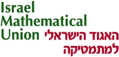

2026 Abarbanel Workshop on Applied and Computational Mathematics
AI & I: doing and evaluating science in the age of AI
The 2026 Abarbanel Workshop on applied and computational mathematics is dedicated to the memory of the late Prof. Saul (Shalom) Abarbanel (1931-2017). It will take place in the Jaglom Auditorium, Tel Aviv University on Wednesday, December 30, 2026.
The program will include:
- research talks;
- 5th Abarbanel Prize in Applied Mathematics award ceremony and talk by the prize recipient PRIZE_TBA;
- an open discussion on doing and evaluating science in the age of AI.
Light refreshments, coffee breaks and lunch will be provided.
For registration (free of charge), please follow the registration link.
Speakers:
- Haim Avron, Tel Aviv University
- Gal Chechik, Bar-Ilan University and NVIDIA
- Niva Elkin-Koren, Tel Aviv University
- Tova Milo, Tel Aviv University
- Oded Rechavi, Tel Aviv University
- Yair Weiss, Hebrew University
- Arik Yochelis, Ben-Gurion University (discussion moderator)
Workshop location:
The Jaglom Auditorium
George S. Wise Senate Building
Tel Aviv University
Parking vouchers are available upon request for registered participants.
Parking is available at the Museums' Parking lot (A) next to the Steinhardt Museum of Natural History (Waze link), a short walk from the workshop venue (B). Bring your parking ticket with you to stamp it for a free parking.
Organizers:
- Yoel Shkolnisky, Tel Aviv University, yoelsh@tauex.tau.ac.il
- Gadi Fibich, Tel Aviv University, fibich@tauex.tau.ac.il
Administrative assistant: Ms. Dana Engel, danaengel@tauex.tau.ac.il, +972-3-6408042
Generously sponsored by: the Abarbanel family, the MINT institute, the Israel Mathematical Union, the School of Mathematical Sciences, and the Raymond and Beverly Sackler Faculty of Exact Sciences, Tel Aviv University.

AbarbanelFamily